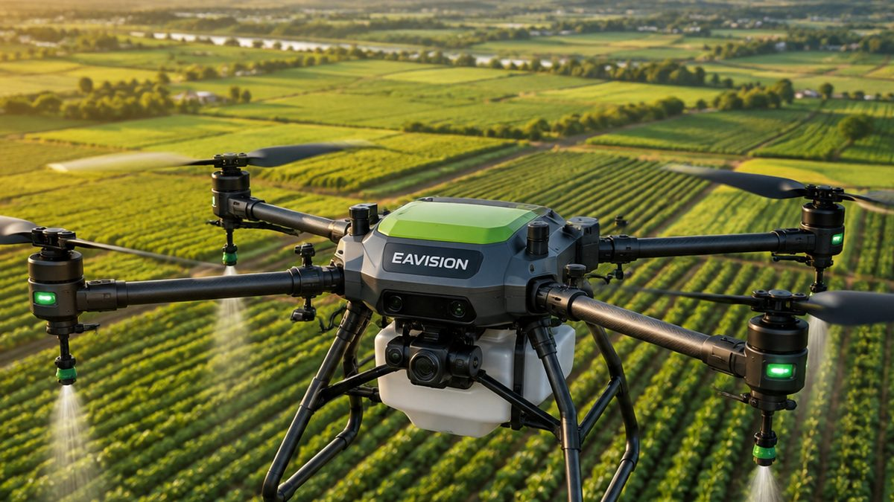

Bukan Cuma Menyemprot: Drone Kini Dipakai untuk Tabur Benih dan Pupuk
Drone pertanian kini juga dipakai untuk menebar benih padi dan pupuk granul. Simak cara kerja, manfaat, dan hal yang perlu diperhatikan.
More Than Spraying: Drones Now Spread Seed and Fertiliser
Agricultural drones are now used to broadcast rice seed and granular fertiliser. Learn how it works, the benefits, and what to watch out for.
不只是喷药：无人机如今也能播种和撒肥
农业无人机如今也用于撒播稻种和颗粒肥。了解其工作原理、优势及注意事项。

Selama ini drone pertanian identik dengan penyemprotan pestisida. Padahal, banyak drone kini bisa berganti fungsi menjadi penebar benih dan pupuk granul hanya dengan mengganti tangki semprot dengan wadah tebar (hopper).
Minat pada drone pertanian juga ikut didorong pemerintah. Dari 38.969 unit alsintan yang disiapkan Kementerian Pertanian pada 2026, 138 unit di antaranya adalah drone pertanian.
Sudah Dikembangkan di Indonesia
Balai Besar Pengembangan Mekanisasi Pertanian (BBP Mektan) Kementan telah mengembangkan drone penebar benih padi dan pupuk granul. Drone tebar benih hasil pengembangannya mampu membawa sekitar 15 kg benih, terbang 1,5–2 m di atas tanah dengan lebar kerja 4 m, dan kapasitas kerja 0,8–1 hektare per jam.
Kementan juga telah menyosialisasikan teknologi ini ke sejumlah sentra padi di Jawa Barat, Jawa Tengah, dan Jawa Timur.
Manfaat Drone Tabur
Hemat Waktu dan Tenaga
Menebar pupuk atau benih secara manual di lahan luas membutuhkan banyak tenaga dan waktu. Dengan drone, satu operator bisa menyelesaikan area yang jauh lebih luas dalam sehari.
Sebaran Lebih Merata
Drone terbang mengikuti rute yang sudah diatur dengan kecepatan dan ketinggian yang stabil, sehingga sebaran benih atau pupuk lebih konsisten di seluruh petak.
Menjangkau Lahan yang Sulit
Operator tidak perlu masuk ke sawah berlumpur atau kebun di lereng bukit. Kemampuan menghindari rintangan juga membuat drone modern lebih aman dipakai di kebun buah dan lahan perbukitan.
Yang Perlu Diperhatikan
Drone tabur tidak bisa dioperasikan saat hujan atau angin kencang, karena angin sangat memengaruhi kestabilan terbang dan ketepatan sebaran benih.
Pastikan juga ukuran butiran benih atau pupuk sesuai dengan sistem tebar drone, dan lakukan kalibrasi takaran sebelum mulai bekerja.
Pilihan Drone EAVision untuk Penebaran
J150
Drone andalan EAVision dengan muatan tebar hingga 80 kg dan kecepatan tebar hingga 280 kg per menit, cocok untuk lahan luas. Lihat detail J150.
J100
Muatan tebar hingga 60 kg dengan kecepatan tebar hingga 110 kg per menit, didukung pengisian daya super cepat sekitar 9 menit. Lihat detail J100.
J70
Drone ringkas dan lincah dengan muatan tebar hingga 50 kg, praktis untuk lahan menengah. Lihat detail J70.
EA-30XP
Dilengkapi sistem penebaran 40 L dengan timbangan pintar dan kemampuan terbang mengikuti kontur medan, ideal untuk kebun di lahan berbukit dan pegunungan. Lihat detail EA-30XP.
Kesimpulan
Satu drone kini bisa dipakai untuk menyemprot, menebar pupuk, dan menebar benih. Bagi petani dan penyedia jasa, fungsi ganda ini membuat drone bekerja lebih banyak sepanjang musim tanam dan investasinya lebih cepat kembali.
Tertarik mencoba drone tabur? PT Diesel Agri Sukses Sejahtera adalah distributor resmi EAVision dan siap membantu demo di lahan Anda.
Butuh saran? Hubungi kami.
Sumber: Badan Litbang Pertanian, AgroIndonesia, Sinar Tani, openPR.
Agricultural drones have long been associated with pesticide spraying. Yet many drones can now switch roles and spread seed or granular fertiliser simply by swapping the spray tank for a spreading hopper.
Government support is also driving interest. Of the 38,969 farm machinery units the Ministry of Agriculture is preparing for 2026, 138 are agricultural drones.
Already Developed in Indonesia
The Ministry of Agriculture's Center for Agricultural Mechanization Development (BBP Mektan) has developed drones for spreading rice seed and granular fertiliser. Its seeding drone carries about 15 kg of seed, flies 1.5–2 m above the ground with a 4 m working width, and covers 0.8–1 hectare per hour.
The Ministry has also introduced the technology to rice-growing centres in West, Central, and East Java.
Benefits of Spreading Drones
Saves Time and Labour
Spreading fertiliser or seed by hand over a large area takes a lot of labour and time. With a drone, one operator can cover a far larger area in a day.
More Even Distribution
The drone flies a preset route at a steady speed and height, so seed or fertiliser is spread more consistently across the whole plot.
Reaches Difficult Land
Operators do not need to wade into muddy paddies or climb hillside plantations. Obstacle avoidance also makes modern drones safer to use in orchards and on hilly land.
Things to Keep in Mind
Spreading drones cannot operate in rain or strong wind, because wind greatly affects flight stability and how accurately the seed is spread.
Also make sure the seed or fertiliser granule size suits the drone's spreading system, and calibrate the application rate before starting work.
EAVision Drones for Spreading
J150
EAVision's flagship drone, with a spreading payload of up to 80 kg and a spreading rate of up to 280 kg per minute, ideal for large fields. View J150 details.
J100
A spreading payload of up to 60 kg and a spreading rate of up to 110 kg per minute, backed by super-fast charging in about 9 minutes. View J100 details.
J70
A compact, agile drone with a spreading payload of up to 50 kg, practical for medium-sized fields. View J70 details.
EA-30XP
Equipped with a 40 L spreading system with smart weighing and terrain-following flight, ideal for orchards on hills and mountains. View EA-30XP details.
Conclusion
One drone can now spray, spread fertiliser, and sow seed. For farmers and service providers, this versatility keeps the drone working throughout the season and speeds up the return on investment.
Interested in trying a spreading drone? PT Diesel Agri Sukses Sejahtera is the authorised EAVision distributor and is ready to arrange a demo on your land.
Need advice? Contact us.
Sources: Badan Litbang Pertanian, AgroIndonesia, Sinar Tani, openPR.
长期以来，农业无人机一直与喷洒农药联系在一起。其实，许多无人机只需将喷洒药箱换成撒播料箱，就能变身为播种和撒肥的工具。
政府的推动也提升了人们对农业无人机的兴趣。在印尼农业部2026年筹备的38,969台农机中，有138架是农业无人机。
印尼已有研发成果
印尼农业部农业机械化发展中心（BBP Mektan）已研制出用于撒播稻种和颗粒肥的无人机。其播种无人机可携带约15公斤种子，在离地1.5–2米高度飞行，作业幅宽4米，作业效率每小时0.8–1公顷。
印尼农业部还已在西爪哇、中爪哇和东爪哇的多个水稻主产区推广这项技术。
撒播无人机的优势
省时省力
在大面积田地上人工撒肥或播种需要大量人力和时间。使用无人机，一名操作员一天就能完成大得多的面积。
撒播更均匀
无人机按预设航线以稳定的速度和高度飞行，种子或肥料在整个地块上的分布更加一致。
到达难以进入的地块
操作员无需下到泥泞的稻田或攀爬山坡种植园。避障功能也让现代无人机在果园和丘陵地带使用更加安全。
注意事项
下雨或大风时不能使用撒播无人机，因为风对飞行稳定性和撒播精度影响很大。
同时请确认种子或肥料的颗粒大小适合无人机的撒播系统，并在作业前校准施用量。
适合撒播的EAVision无人机
J150
EAVision旗舰无人机，撒播载重最高80公斤，撒播速度最高每分钟280公斤，适合大面积地块。查看J150详情。
J100
撒播载重最高60公斤，撒播速度最高每分钟110公斤，支持约9分钟超快充电。查看J100详情。
J70
小巧灵活的无人机，撒播载重最高50公斤，适合中等面积地块。查看J70详情。
EA-30XP
配备带智能称重的40升撒播系统，可仿地飞行，非常适合山地和丘陵果园。查看EA-30XP详情。
结论
一架无人机如今可以喷药、撒肥和播种。对农民和飞防服务商而言，一机多用让无人机在整个种植季都有活干，投资回报也更快。
想试用撒播无人机？ PT Diesel Agri Sukses Sejahtera 是EAVision授权经销商，可为您安排田间演示。
需要建议？联系我们。
资料来源： Badan Litbang Pertanian, AgroIndonesia, Sinar Tani, openPR.